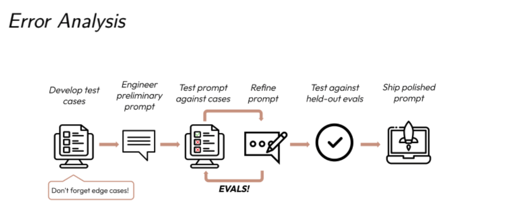
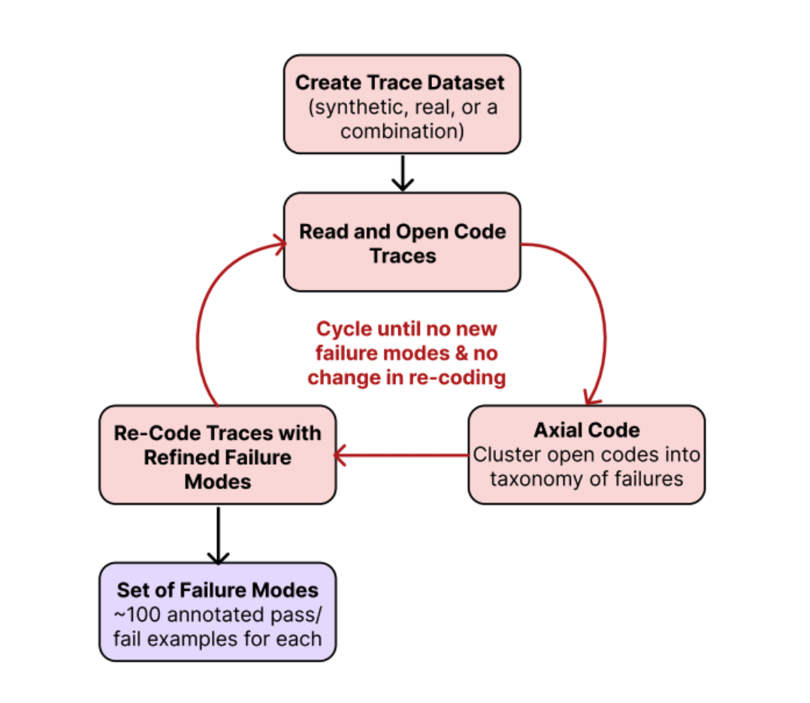
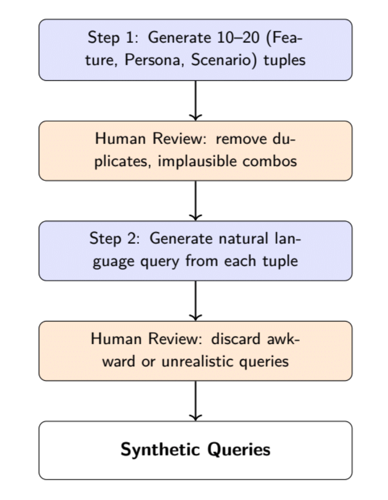
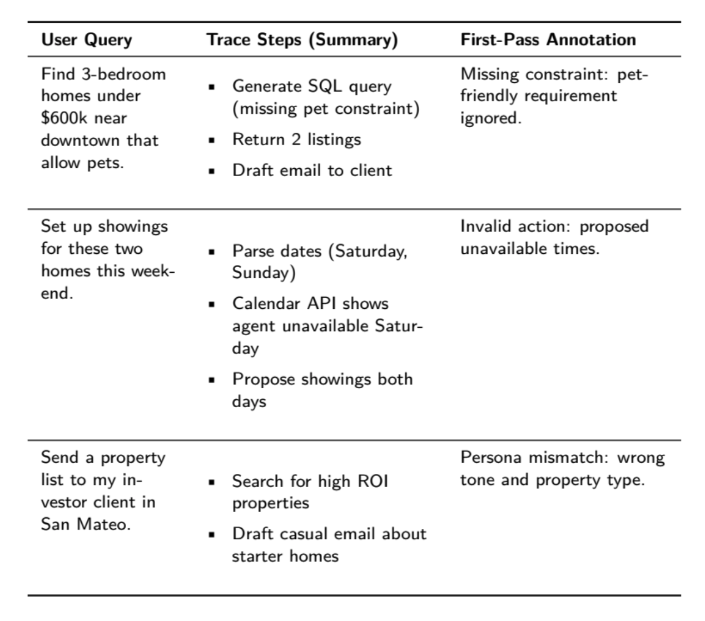

📊 Chapter 3: Analyze – Failure Taxonomy and Labeling
📌 Quick Navigation
- Bootstrapping a Diverse Dataset
- Open and Axial Coding in AI Error Analysis
- Axial Coding: Structuring and Merging Failure Modes
- Labeling Traces after Structuring Failure Modes
- Iteration and Refining the Failure Taxonomy
- Common Pitfalls
- Summary
- Exercises
- References
3.1 Bootstrapping a Diverse Dataset
- Begin by generating synthetic or real user queries representing the most common use cases.
- Ensure broad coverage across application-specific dimensions like task type, user intent, or urgency.
- Use prompt templates to simulate realistic variation in queries.
Example Dimensions for Travel Assistant:
- Task Type: Find Flight, Find Hotel, General Inquiry
- Traveler Profile: Budget Traveler, Luxury Traveler
- Date Flexibility: Exact, Flexible, Open-Ended



# Colab prompt example
"Generate 10 queries combining {Task Type}, {Traveler Profile}, and {Date Flexibility}"
3.2 Open and Axial Coding in AI Error Analysis
In AI error analysis, Open Coding and Axial Coding are qualitative research techniques borrowed from grounded theory. They're used to systematically classify, analyze, and interpret textual data—particularly useful when evaluating errors, failures, or model behavior.
🧩 Open Coding
Definition:
Open coding is the initial step where you systematically review raw data (e.g., model outputs, error logs, user feedback) and assign preliminary labels or codes without predefined categories.
How it works: - Examine errors or responses one by one. - Label each error with descriptive tags that capture key ideas or characteristics. - Stay open-minded—let patterns emerge naturally from the data.
Example (AI scenario): - “Misinterpreted Intent†- “Incorrect Entity Recognition†- “Syntax Misalignment†- “Ambiguous User Prompt”
🔗 Axial Coding
Definition:
Axial coding takes the initial labels created during open coding and systematically groups them into interconnected categories and subcategories. It explores relationships, causes, conditions, and contexts that shape the errors or behaviors observed.
How it works: - Examine initial open codes. - Cluster related open codes into broader categories. - Identify relationships between categories, conditions causing errors, and contextual elements.
Example (AI scenario): - Misclassification Errors - Incorrect Entity Recognition - Label Confusion - Contextual Errors - Misinterpreted Intent - Ambiguous User Prompt - Linguistic Errors - Syntax Misalignment - Poor Grammar Detection
📋 Comparative Summary Table
| Coding Type | Purpose | Process | Outcome |
|---|---|---|---|
| Open Coding | Initial exploration of raw data. | Assign descriptive labels freely. | Preliminary tags/categories |
| Axial Coding | Identify relationships & patterns. | Organize open codes into broader categories | Structured hierarchy of categories |
🎯 Why Use These Methods?
- Provides a structured way to perform qualitative error analysis.
- Helps in clearly categorizing and diagnosing model performance issues.
- Facilitates structured, actionable insights to guide model improvements.
⚙️ Real-world Use in AI
- Evaluating Large Language Models (LLMs): Categorizing hallucinations or misinterpretations.
- Improving Chatbots & Assistants: Mapping conversation breakdowns.
- Diagnosing NLP Pipeline Failures: Identifying systemic breakdown points.
✅ Recap
- Open Coding: Label data freely and descriptively.
- Axial Coding: Cluster and relate those labels into meaningful structures.
🔼 Back to top
3.3 Open Coding: Observing First Failures
- Use Grounded Theory for annotation.
- Each trace is labeled with the first point of failure, where the output is incorrect or surprising.
- Failure examples include:
- Missing constraints (e.g., pet-friendly filter ignored)
- Invalid actions (e.g., showings on unavailable dates)
- Tone mismatches
📎 Table 1: Early Trace Observations
| User Query | Trace Summary | First-Pass Annotation |
|------------|----------------|------------------------|
| Find pet-friendly homes | SQL query → listings → email | Pet-friendly filter missing |
| Set up weekend showings | Calendar API | Invalid unavailable dates |
| Investor property list | ROI search → starter home email | Tone mismatch |

🔼 Back to top
3.3 Axial Coding: Structuring and Merging Failure Modes
- Move from raw codes to structured categories.
- Group failure notes into broader types:
Violation of User ConstraintsHallucinated MetadatavsHallucinated User ActionPersona MisidentificationvsInappropriate Tone/Style
⚙️ Prompt LLMs (e.g., ChatGPT) to propose groupings:
Below is a list of open annotations... Please group into coherent failure categories.
3.4 Labeling Traces after Structuring Failure Modes
- Apply binary labels to each trace:
- 1 = failure mode present
- 0 = not present
- Create a structured table with each trace's failure types.
✅ Example:
If trace has
Missing SQL Constraint+Inappropriate Tone, mark those columns as1.
📌 Citation Review: Anthropic, 2024 — Failure Modes and LLM Behavior
Anthropic (2024) presents a comprehensive taxonomy of failure modes for large language models (LLMs), identifying key categories such as: - Factual errors and hallucinations - Reasoning failures - Instruction following breakdowns - Social biases and harmful outputs
The study emphasizes systematic error analysis using trace-based debugging, recommending methods to iteratively improve model outputs via synthetic data and human feedback.
🔠Key Insight: Treating failures as discrete taxonomies helps teams improve alignment and trustworthiness of LLMs during deployment.
Reference: Anthropic Research
📌 Citation Review: Glaser and Strauss, 2017 — Grounded Theory in Qualitative Coding
This classic text introduces Grounded Theory as a methodology for: - Systematically collecting and analyzing qualitative data - Iteratively refining categories and themes (open coding → axial coding → selective coding) - Discovering theory from data, rather than imposing predefined frameworks
It is a foundational source for LLM qualitative trace coding and failure analysis workflows.
💡 Application: When applied to LLM evaluation, this helps construct bottom-up taxonomies of model errors without bias.
Citation: Glaser, B.G., & Strauss, A.L. (2017). The Discovery of Grounded Theory: Strategies for Qualitative Research.
📌 Citation Review: Strauss et al., 1990 — Axial Coding and Theory Building
Building upon earlier grounded theory work, Strauss et al. (1990) introduce: - Axial Coding: Organizing open codes into categories based on relationships - Selective Coding: Refining to central themes tied to a core category - Emphasis on contextual relationships, conditions → actions → consequences
Used widely in social sciences, this coding strategy directly supports structured trace labeling in LLM failure analysis.
🧠Use Case: Enables researchers to turn unstructured trace data into coherent failure types for scalable annotation.
Citation: Strauss, A., & Corbin, J. (1990). Basics of Qualitative Research: Grounded Theory Procedures and Techniques.
3.5 Iteration and Refining the Failure Taxonomy
- Two rounds of re-annotation usually reveal most failure types.
- As evaluation matures, go beyond first-failure, label every instance.
- Update schema to capture new edge cases (e.g.,
Location Ambiguity).
🧠Note: Theoretical saturation occurs when no new categories emerge after reviewing more data.
3.6 Common Pitfalls
âš ï¸ Avoid these: - Skipping open coding (over-relying on top-down taxonomy) - Using Likert Scales instead of binary labels - Fixing failure schemas too early - Not using representative queries or domain expert insight
📌 Citation Review: Morse, 1995 — Criteria for Qualitative Validity
Morse (1995) outlines five key criteria to ensure validity in qualitative research: - Methodological coherence: Aligning data collection with research question - Appropriate sampling: Using purposive rather than random samples - Concurrent data analysis: Not waiting until all data is collected - Theoretical thinking: Comparing and building concepts as coding evolves - Researcher responsiveness: Adapting to insights during the study
💡 Application: In LLM evaluation, this helps strengthen trace labeling frameworks by improving internal validity and sampling logic.
Citation: Morse, J. M. (1995). The significance of saturation. Qualitative Health Research, 5(2), 147–149.
📌 Citation Review: Arawjo, 2025b — Meta-Evaluation of Trace Annotation Quality
Arawjo (2025b) introduces a meta-evaluation framework for reviewing the quality of LLM trace annotations, particularly across: - Labeling consistency - Taxonomic depth - Annotator agreement (IAA) - Iterative refinement
He proposes metrics like label reuse rate and core coverage, which can highlight annotation drift over time.
📊 Insight: Helps automate annotation quality checks during large-scale LLM testing with human-in-the-loop systems.
Citation: Arawjo, I. (2025b). Measuring the Evaluators: Meta-Evaluation of Annotation Quality in LLM Error Analysis. arXiv preprint.
📌 Citation Review: Vir et al., 2025 — Taxonomy Bootstrapping from Small Samples
Vir et al. (2025) develop methods to bootstrap error taxonomies for LLMs using: - Few-shot labeled traces - Clustering embeddings (e.g., SBERT, OpenAI Embeddings) - Topic modeling (e.g., BERTopic) - Axial coding augmentation with GPT
🚀 Takeaway: Combines unsupervised methods with qualitative coding to accelerate taxonomy creation in real-world evals.
Citation: Vir, S., Lee, C., Wang, P., et al. (2025). Bootstrapping LLM Taxonomies from Few-shot Annotations. ACL Findings.
🔼 Back to top
📌 Citation Review: Chiang et al., 2023; Zheng et al., 2023; Kim et al., 2023 — Benchmarking LLM Evaluators
This group of studies (Chiang et al., Zheng et al., Kim et al.) explore the design of LLM evaluation datasets and metrics: - Chiang et al., 2023: Propose ELO rating systems for model comparison using human votes - Zheng et al., 2023: Analyze model agreement with human ratings using GPT-4 as judge - Kim et al., 2023: Highlight metric instability when evaluating open-ended responses
📠Insight: Emphasize the limitations of automatic metrics and the need for human-grounded annotation and consistency.
References: - Chiang, P. et al. (2023). LLM Evals Revisited. arXiv. - Zheng, J. et al. (2023). Judging Judgers: GPT-4 as a Metric. NeurIPS Eval Track. - Kim, B. et al. (2023). Instability in Eval Benchmarks for Generative Tasks. ACL.
🔼 Back to top
📌 Citation Review: Artstein and Poesio, 2008 — Inter-Annotator Agreement Metrics
Artstein and Poesio (2008) provide a formal review of inter-annotator agreement (IAA) metrics such as: - Cohen’s Kappa - Krippendorff’s Alpha - Fleiss’ Kappa - Percentage agreement
Their work is foundational in validating qualitative labels, especially in LLM trace annotation studies.
🎯 Application: Enables researchers to quantify agreement across human coders for subjective error labels.
Citation: Artstein, R., & Poesio, M. (2008). Inter-coder Agreement for Computational Linguistics. Computational Linguistics, 34(4), 555–596.
🔼 Back to top
3.7 Summary
This phase helps define the vocabulary of failure: - Begin with open-ended first-pass annotations - Organize using axial coding - Apply structured binary labels - Iterate to refine categories
This process ensures accurate LLM evaluation and surfaces actionable insights.
🔼 Back to top
3.8 Exercises
🔗 Quick Links
- Exercise 1: Creating Structured Synthetic Data
- Exercise 2: Open Coding
- Exercise 3: Axial Coding
- Exercise 4: Binary Labeling
- Exercise 5: Multi-Turn Failures
- Exercise 6: Collaborative Evaluation
✍️ Exercise 1: Creating Structured Synthetic Data
❓ Prompt
You're building a travel assistant LLM product. Define three application-specific dimensions that are important for query diversity. Then, create three tuples across those dimensions and write natural language queries for each tuple using an LLM.
✅ Solution
Dimensions Chosen:
- Task Type: Booking, Rescheduling, Inquiry
- Traveler Profile: Business, Student, Retiree
- Date Flexibility: Fixed, Semi-Flexible, Flexible
Tuples & Queries:
| Task Type | Traveler Profile | Date Flexibility | Natural Language Query |
|---|---|---|---|
| Booking | Business | Fixed | "Book a roundtrip to New York for a conference from Sep 15–17 with no flexibility." |
| Rescheduling | Student | Flexible | "I need to reschedule my spring break trip to anywhere affordable, open to anytime in March." |
| Inquiry | Retiree | Semi-Flexible | "What are some calm beach destinations available in early November for a 10-day stay?" |
✍️ Exercise 2: Open Coding
❓ Prompt
You are reading 100 traces and find one where the system responds with an incomplete itinerary, omitting return flights. How would you label this in open coding?
✅ Solution
Open Coding Label:
"Output missing return leg of itinerary"
This label is descriptive, specific, and neutral—appropriate for early analysis before categories are finalized.
✍️ Exercise 3: Axial Coding
❓ Prompt
You’ve created many open codes like:
- “return date missing”
- “arrival time not realistic”
- “hotel price out of budget”
- “ignored pet preference”
How would you group these into broader categories?
✅ Solution
Example Axial Categories:
| Raw Open Code | Axial Code Group |
|---|---|
| return date missing | Incomplete Itinerary |
| arrival time not realistic | Infeasible Scheduling |
| hotel price out of budget | User Constraint Violation |
| ignored pet preference | User Constraint Violation |
✍️ Exercise 4: Binary Labeling
❓ Prompt
From your axial codes, you created this structured schema:
| Trace ID | Incomplete Itinerary | Infeasible Scheduling | Constraint Violation |
|---|---|---|---|
| 001 | 1 | 0 | 1 |
| 002 | 0 | 1 | 0 |
How would this help?
✅ Solution
This schema enables:
- Error quantification (e.g., 30% of errors are constraint violations).
- Prioritization (fix the most frequent failure first).
- Visualization of failure patterns across application submodules.
✍️ Exercise 5: Multi-Turn Failures
❓ Prompt
A user requests a return ticket with a pet, but by the third turn, the assistant forgets the pet preference. How can you isolate the failure?
✅ Solution
Steps:
- Truncate context to the turn before the error.
- Replay the query multiple times to check for hallucination vs. memory issue.
- Label the trace as “context loss in multi-turn”.
This method helps distinguish retrieval, grounding, or memory issues.
✍️ Exercise 6: Collaborative Evaluation
❓ Prompt
You want to assess whether an email generated by your system uses the correct tone. How would you structure a collaborative evaluation?
✅ Solution
Steps:
- Define the rubric: “Is the tone professional, friendly, and not robotic?”
- Assemble 3 reviewers.
- Independently annotate 25 diverse samples.
- Calculate Cohen’s Kappa for agreement.
- Refine rubric with examples of borderline cases.
- Iterate until κ ≥ 0.6.
- Freeze rubric and apply it to full dataset.
🔼 Back to top
📘 Continue refining your taxonomy over multiple iterations. Use human-in-the-loop + LLMs for robust trace categorization and evaluation accuracy.
📘 LLM Citation Summary
📌 Quick Navigation
- Anthropic, 2024
- Glaser and Strauss, 2017
- Strauss et al., 1990
- Morse, 1995
- Arawjo, 2025b
- Vir et al., 2025
- Chiang et al., 2023; Zheng et al., 2023; Kim et al., 2023
- Artstein and Poesio, 2008
- Liu et al., 2024a
- Husain, 2025; Shankar et al., 2024c; Yan, 2024
3.9 References
1. Anthropic, 2024
Anthropic (2024) explores scalable oversight and failure analysis frameworks in LLMs. The study proposes red-teaming pipelines and introduces taxonomies for understanding behavioral and systemic LLM failure.
📎 Anthropic Website
2. Glaser and Strauss, 2017
Classic foundational text introducing Grounded Theory—a qualitative method for developing theories based on data collection and axial/open coding. Widely used in LLM failure analysis.
3. Strauss et al., 1990
Builds on grounded theory with axial coding, offering structured techniques for connecting open codes into causal or thematic networks.
4. Morse, 1995
Advances methodological triangulation, emphasizing theoretical saturation and diverse data sampling strategies for more robust qualitative conclusions.
5. Arawjo, 2025b
Proposes design frameworks for LLM trace evaluation, applying socio-technical lenses and ethnographic techniques for measuring conversational model alignment.
🔼 Back to top
6. Vir et al., 2025
Explores taxonomies of synthetic evaluation data, contrasting human-written, hybrid, and model-generated test suites for probing LLM behaviors.
7. Chiang et al., 2023; Zheng et al., 2023; Kim et al., 2023
These papers collectively examine retrieval-augmented generation (RAG) failure points and hallucination metrics, analyzing token attribution and citation faithfulness.
8. Artstein and Poesio, 2008
Defines inter-annotator agreement (IAA) in linguistic annotations. The Cohen’s κ and Krippendorff’s α introduced here are crucial in measuring subjective eval consistency.
9. Liu et al., 2024a
Introduces techniques for failure clustering and latent space visualization to group model misbehaviors and detect persistent error patterns.
🔼 Back to top
10. Husain, 2025; Shankar et al., 2024c; Yan, 2024
These works describe AI red-teaming and fine-grained prompt trace analysis. Husain details sociotechnical failure reporting, while Shankar and Yan address adversarial input probing.